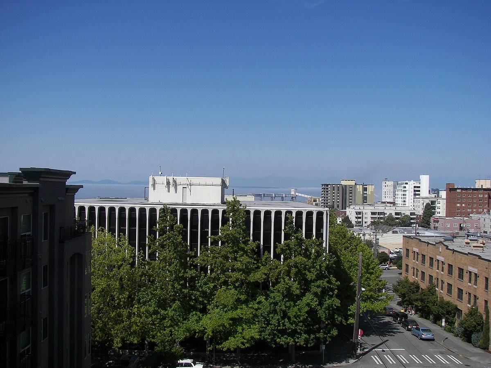

Living in Lower Queen Anne

Lower Queen Anne is a neighborhood in northwestern Seattle, Washington, at the base of Queen Anne Hill. While its boundaries are not precise, the toponym usually refers to the shopping, office, and residential districts to the north and west of Seattle Center. The neighborhood is connected to Upper Queen Anne—the shopping district at the top of the hill—by an extremely steep section of Queen Anne Avenue N. known as the Counterbalance, in memory of the cable cars that once ran up and down it. (From Wikipedia, CC BY-SA 4.0)
Lower Queen Anne is a neighborhood in Queen Anne, Seattle with about 13,585 residents. The typical home value is about $670K (-1.3% over the past year), and 86 homes sold in the last 12 months. It is very walkable, with higher crime than most neighborhoods in the area.
Home prices and the market
Home prices and the market
| Typical home value | $670K · -1.3% over 12 months |
|---|---|
| Homes sold, last 12 months | 86 · median sale price $628K · 63 were condos |
| Homes for sale (estimate) | 51 · homes typically go under contract in 18 days |
| Median household income | $109K · 136th highest income of 155 |
Schools
Schools
| Elementary | John Hay Elementary School, 0.5 mi · 52% meet standard Area average 54% · 118th best elementary schools of 155 |
|---|---|
| Middle school | McClure Middle School, 0.8 mi · 70% meet standard Area average 69% · 76th best middle schools of 155 |
| High school | Cascade Parent Partnership Program, 1.5 mi · 47% meet standard Area average 77% · 49th best high schools of 155 |
| Nearest college | City University, 0.7 mi |
Share of students meeting the Washington state standard in English and math (2024-25). The nearest school is not always the assigned school; check with the school district.
Safety
Safety
About 120 crimes per 1,000 residents a year (violent crimes counted three times), higher crime than most neighborhoods in the area: 141st lowest crime of 155. Based on mapped police incidents in this neighborhood, scaled to the city's FBI-reported rate. Busy commercial areas can look high because visitors are not counted as residents.
Getting around
Getting around
| Walkability | 17.3 of 20 (very walkable) · 16th most walkable of 155 |
|---|---|
| Light rail or train | Westlake & Mercer, 0.7 mi · 37th closest to rail of 155 |
| Nearest bus stop | 1st Ave N & Mercer St, 0.08 mi |
| How residents commute | 13% take transit · 39% work from home |
Everyday amenities
Everyday amenities
| Grocery store | Metropolitan Market, 0.1 mi · 10 within a mile |
|---|---|
| Pharmacy | CVS Pharmacy, 0.2 mi |
| Restaurants | 154 within a mile · 11th most restaurants nearby of 155 |
| Shopping | Pier 70 Shopping Center, 0.7 mi |
| Hospital | Virginia Mason Hospital, 1.6 mi · 24 clinics within 2 miles |
| Library | Queen Anne Library, 0.7 mi |
Parks and recreation
Parks and recreation
| Nearest park | Seattle Center, 0.1 mi · 180 acres of parks within a mile |
|---|---|
| Large green space | Seattle Center, 0.1 mi |
| Walking trail | West Thomas Street Pedestrian & Bicycle Overpass, 0.4 mi |
| Gyms, spas and studios | 42 within a mile |
| Golf | Interbay Golf, 1.5 mi |
Thinking about Lower Queen Anne?
Rachel Yo, Realogics Sotheby's International Realty, can walk you through homes for sale, recent sales and what to know before you buy here.
Your details go only to Rachel Yo at Realogics Sotheby's International Realty to answer your request. They are not sold or shared, and your mobile number and texting permission are never shared with anyone for marketing.
Nearby neighborhoods
- WestlakeSeattle · $619K
- East Queen AnneSeattle · $886K
- BelltownSeattle · $518K
- West Queen AnneSeattle · $1.39M
- Denny TriangleSeattle · $570K
- South Lake UnionSeattle · $674K
Data as of: home values Zillow 2026-09; recorded sales Nov 2025 – Oct 2026; schools OSPI 2024-25; Census ACS 2020-2024. Distances are straight-line from the center of the neighborhood.